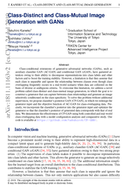

NOTE: In CVPR 2019, we proposed label-noise robust GAN (rGAN) [1], which is another conditional extension of GAN for noisy labeled data. Check it from HERE!
Abstract
Class-conditional extensions of generative adversarial networks (GANs), such as auxiliary classifier GAN (AC-GAN) and conditional GAN (cGAN), have garnered attention owing to their ability to decompose representations into class labels and other factors and to boost the training stability. However, a limitation is that they assume that each class is separable and ignore the relationship between classes even though class overlapping frequently occurs in a real-world scenario when data are collected on the basis of diverse or ambiguous criteria. To overcome this limitation, we address a novel problem called class-distinct and class-mutual image generation, in which the goal is to construct a generator that can capture between-class relationships and generate an image selectively conditioned on the class specificity. To solve this problem without additional supervision, we propose classifier's posterior GAN (CP-GAN), in which we redesign the generator input and the objective function of AC-GAN for class-overlapping data. Precisely, we incorporate the classifier's posterior into the generator input and optimize the generator so that the classifier's posterior of generated data corresponds with that of real data. We demonstrate the effectiveness of CP-GAN using both controlled and real-world class-overlapping data with a model configuration analysis and comparative study.
Paper
|  |
[Paper] |
Citation
Takuhiro Kaneko, Yoshitaka Ushiku, and Tatsuya Harada.
Class-Distinct and Class-Mutual Image Generation with GANs. In BMVC, 2019.
[BibTex]
Code
Overview
Our goal is, given class-overlapping data, to construct a class-distinct and class-mutual image generator that can selectively generate an image conditioned on the class specificity. To solve this problem, we propose CP-GAN (b), in which we redesign the generator input and the objective function of AC-GAN [2] (a). Precisely, we employ the classifier’s posterior to represent the between-class relationships and incorporate it into the generator input. Additionally, we optimize the generator so that the classifier’s posterior of generated data corresponds with that of real data. This formulation allows CP-GAN to capture the between-class relationships in a data-driven manner and to generate an image conditioned on the class specificity.
Samples
CIFAR-10to5
Acknowledgement
We would like to thank Hiroharu Kato, Atsuhiro Noguchi, and Antonio Tejero-de-Pablos for helpful discussions. This work was supported by JSPS KAKENHI Grant Number JP17H06100, partially supported by JST CREST Grant Number JPMJCR1403, Japan, and partially supported by the Ministry of Education, Culture, Sports, Science and Technology (MEXT) as ``Seminal Issue on Post-K Computer.''
Related work
[1]
T. Kaneko, Y. Ushiku, T. Harada.
Label-Noise Robust Generative Adversarial Networks,
In CVPR, 2019.
[Paper]
[Project]
[Code]
[2]
A. Odena, C. Olah, and J. Shlens.
Conditional image synthesis with auxiliary classifier GANs.
In ICML, 2017.
[Paper]